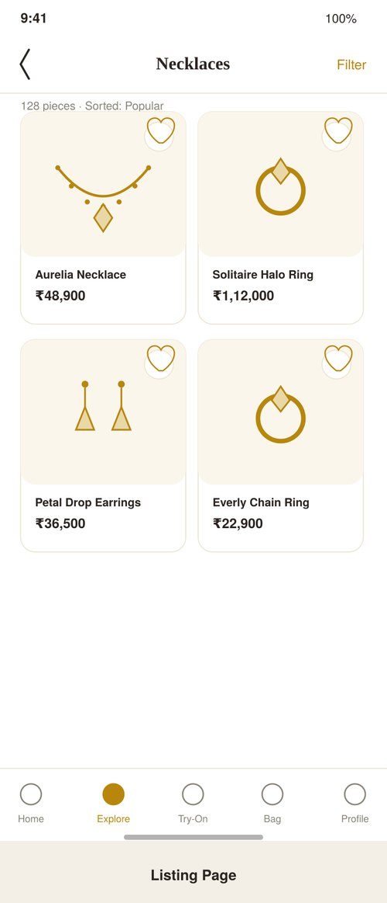
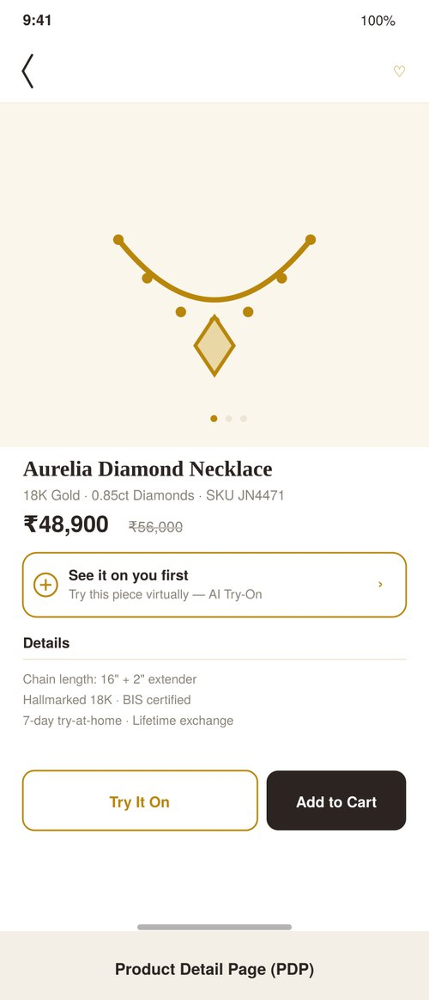
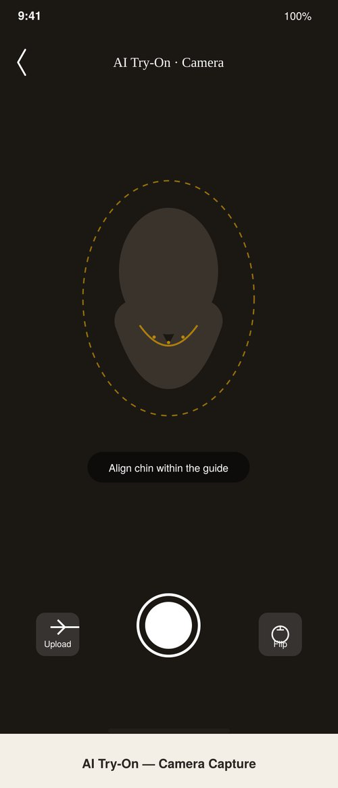
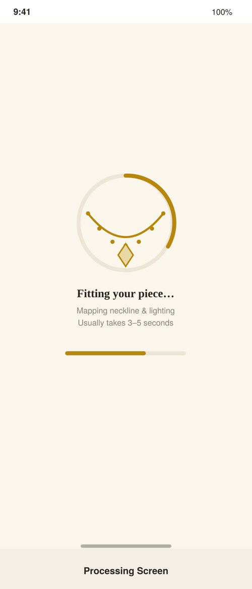
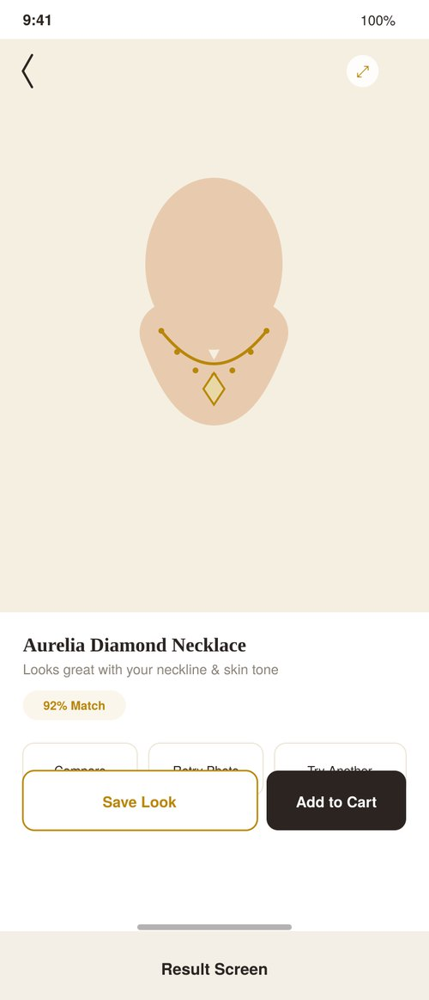
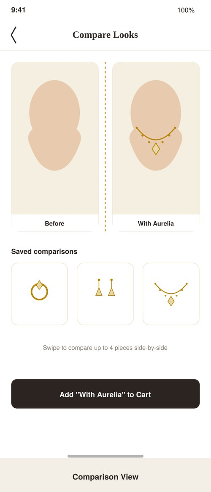
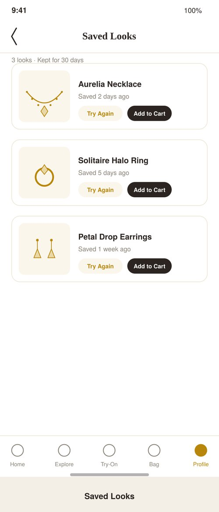
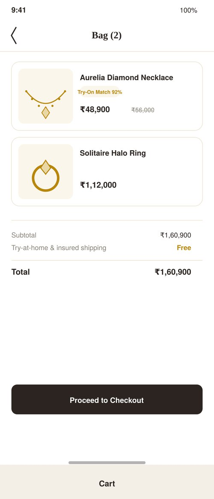

PRD · Computer vision · E-commerce
AI Try-On for an online jewellery app
Let shoppers see a piece on their own face and neck before they buy, so a ₹50,000 decision rests on how it looks on them, not on a catalogue photo of a model.
- Type
- Product requirements document
- For
- Design and engineering teams
- North Star
- 25% of product-page sessions use Try-On
- MVP
- Necklaces, top 50 SKUs
Goal and vision
Make AI Try-On the default way people judge fine jewellery online: the visual-confidence layer between browsing and buying.
- Visual confidence: close the gap between a catalogue photo and how the piece looks on you.
- Fewer returns: less need for in-store trial before a first high-value purchase.
- Habit: the app people reopen before every occasion purchase.
- Differentiation: marketplaces only show static model photography.
Background
The two founding pain points are mistrust of catalogue images and not knowing whether a piece suits an outfit. Better photography fixes neither: it can't show how a necklace sits on your neck, skin tone or outfit.
Directional benchmarks, from AR try-on in eyewear and beauty, adjusted for jewellery's higher price and lower purchase frequency:
| Signal | Value | Why it matters |
|---|---|---|
| Returns on jewellery bought unseen | 18–22% | Many returns cite "did not look as expected", not a defect |
| Product page to cart, today | ~2.1% | The baseline Try-On should move |
| Pre-sales chats asking "how will this look on me" | ~9% | Users already ask by hand; this productises the behaviour |
Why now: face and neck landmark tracking is now reliable on mid-range phones, not just flagships, so real-time overlay works without rebuilding the native app.
North Star
% of product-page sessions that use Try-On before Add to Cart: 0% today, 25% within six months of full launch.
Adoption is a leading indicator that moves fast and attributes cleanly. Revenue and returns are tracked too, but they take two or three purchase cycles to show signal and get muddied by pricing, seasonality and marketing spend.
Personas
| Persona | Goal | Pain points, prioritised |
|---|---|---|
| The Occasion Shopper | Certainty before spending ₹50K+ on one piece for a wedding or festival | 1. Doesn't trust catalogue lighting or model skin tone 2. Can't tell if it suits her outfit until it arrives 3. Returning a high-value item feels uncomfortable |
| The Everyday Gold Buyer | A quick "does this suit me" check on smaller, frequent buys | 1. Won't spend more than 30–45 seconds on a sub-₹20K piece 2. Abandons a slow or fiddly flow |
| The Gifter | Confidence the piece suits someone who isn't there | 1. Can't try it on the recipient 2. Guesses skin tone and face shape from memory |
The Gifter is not solved directly in v1 because of consent rules for someone else's face; it's flagged as an open question for Design and Legal.
Pain points → features
| Pain point | Feature |
|---|---|
| Catalogue images look different from reality | Live camera Try-On with corrected lighting; side-by-side Comparison View |
| Unsure whether it matches the outfit | Photo-upload Try-On against a photo in the actual outfit; Saved Looks |
| High-value returns: "didn't look as expected" | Match confidence on the result; a "Tried On" badge carried into the cart |
| Slow evaluation on smaller purchases | Under-5-second processing target; one-tap Retry |
User journey and mockups
The happy path, with both entry points (camera and upload) and failure states designed in from day one rather than bolted on.








Failure states
| Failure | Handling |
|---|---|
| No face detected | Inline guidance and retry; doesn't count against rate limits |
| Poor lighting | Warn before capture; specific error after |
| Processing over 10 s | Auto-cancel, offer Retry, log to the AI accuracy dashboard |
| No 3D asset for the SKU | Hide the Try-On button on that product |
| Unsupported device | Hide the entry point on the client |
| Network drop | Retry locally with the cached frame for up to 30 s |
Technical requirements, in short
- Frontend: camera access on web and native, a client-side alignment guide with no server round-trip, and a device capability check on page load.
- Backend: a Try-On service to create a session, accept a frame, return the overlay with confidence, and save on request; async processing with a 3–5 s target; 30 attempts per hour per user.
- Computer vision: 68+ point face and neck landmarks, lighting normalisation on the jewellery (not the user's photo), and realistic metal and diamond rendering.
- The real bottleneck: producing a 3D asset per SKU. Merchandising has to scale and QA that pipeline from week one.
- Privacy (DPDP Act): explicit consent for facial data, frames processed in memory and discarded, Saved Looks opt-in only, encrypted and deletable.
Release plan
| Feature | Priority | Phase | Rationale |
|---|---|---|---|
| Camera Try-On, necklaces, top 50 SKUs | P0 | 1 · MVP | Necklaces have the simplest geometry; 50 SKUs tests the asset pipeline without missing assets everywhere |
| Photo-upload Try-On | P0 | 1 · MVP | Solves outfit matching at low extra cost |
| Result screen + Add to Cart | P0 | 1 · MVP | Closes the loop to a business outcome |
| Full necklace catalogue | P1 | 2 | Gated on asset throughput, not engineering |
| Comparison View, Saved Looks | P1 | 2 | Need saved state and the consent flow first |
| Rings | P1 | 2 | Hand-pose tracking is a different model |
| Earrings, share to social | P2 | 3 | Hair and ear occlusion make earrings hardest |
Metrics, launch and open questions
- Metrics: activation (product-page viewers who tap Try It On), engagement (try-ons per session, retry and completion), conversion (cart rate from the result vs the product page), business (order count and value on Try-On orders), trust (returns on Try-On orders, 6–8 week lag) and AI accuracy (success rate, latency, "didn't look right" reports).
- Launch: a named feature on product pages and the home page, aimed first at shoppers who viewed 3+ necklaces in 30 days without buying; 10% of eligible traffic for a week, then 100%.
- Open questions: exact DPDP consent wording (Legal), device cut-offs (Engineering), per-SKU asset turnaround (Design and Category), and whether to support trying a piece on someone else's photo (Product and Legal).
- Future scope: matching sets, "complete the look" suggestions, an in-store kiosk, and video try-on to show how metal catches light.
Skills this shows
- PRD writing
- Persona and pain-point mapping
- North Star selection
- Failure-state design
- Privacy and compliance trade-offs
- MVP scoping around a bottleneck